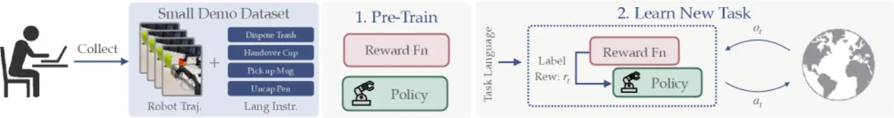
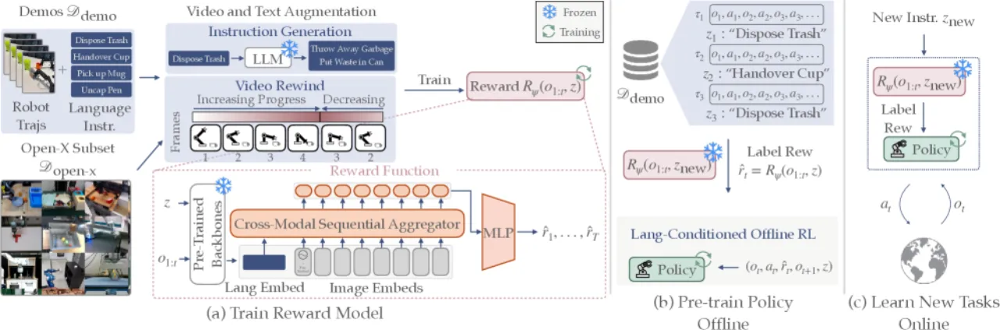
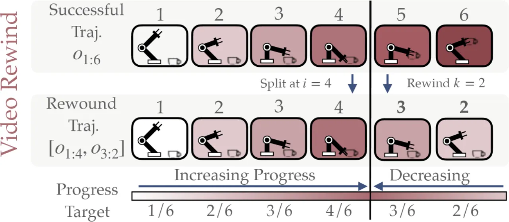
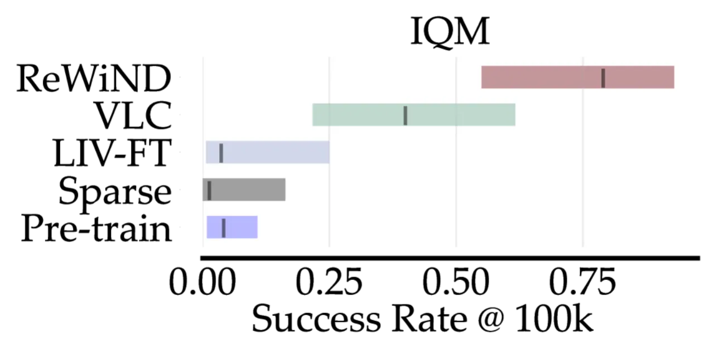
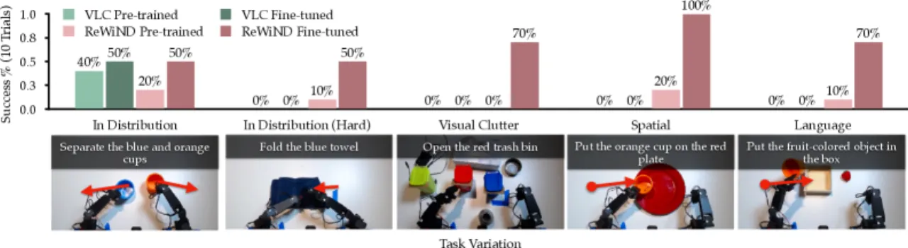
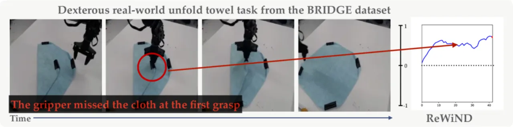

ReWiND 是一个框架，让机器人仅凭语言指令就能学会操控任务——无需针对每个新任务收集示范数据。它学习一个高数据效率的语言条件奖励函数，并结合离线与在线强化学习，在未见过的任务上实现泛化。
机器人学习长期面临两难困境：要么需要为每个任务人工设计奖励函数，要么需要大量专家示范数据。现有语言条件奖励学习方法往往依赖真值状态信息或数千条示范，难以推广到真实场景。
"我们的框架仅需少量示范（例如每个任务五条），便能让机器人通过语言指令学习未见过的任务变体，无需额外收集新示范。" —— 论文核心主张

ReWiND 包含三个阶段：（1）从少量示范中学习语言条件奖励函数；（2）用该奖励函数对语言条件策略进行离线 RL 预训练；（3）对未见新任务使用在线 RL 进行微调，全程无需额外示范。

奖励函数 Rψ(o1:t, z) 以观测序列和语言指令为输入，预测每帧对应的任务进度（范围 0→1）。对于匹配的视频-指令对，模型学习预测单调递增的进度值；对于不匹配对，则预测为零进度。这种"stable, fixed targets"设计将进度直接转化为归一化奖励，避免了奖励尺度不稳定的问题。
架构关键设计：
这是 ReWiND 最核心的创新之一。在线 RL 期间，策略不可避免地会产生各种失败轨迹，但示范数据仅含成功序列，导致奖励函数无法正确评估失败行为。

为提升语言泛化能力，ReWiND 还整合了来自 Open-X Embodiment 数据集的 356k 条轨迹（含 59k 个唯一任务字符串），并通过 LLM 为每个任务生成 5–10 条多样化语言描述。训练目标结合了进度损失和回绕损失，使奖励函数对指令措辞的变化保持鲁棒。
实验分三部分：（Q1）奖励函数质量评估；（Q2）策略学习性能；（Q3）消融研究。基线包括 LIV、RoboCLIP、VLC、GVL 等主流方法。
| 指标 | VLC（基线） | LIV-FT（基线） | ReWiND（本文） |
|---|---|---|---|
| 任务进度 Pearson 相关系数 r | 0.64 | — | 0.83 |
| 任务进度 Spearman 相关系数 ρ | 0.62 | — | 0.79 |
| 策略轨迹排序（相对 LIV-FT 提升） | — | 基线 | +74%（奖励顺序）/ +58%（奖励差距） |
| 语言鲁棒性 Spearman ρ（方差） | 0.60 (高方差) | — | 0.74 (方差 0.04)，提升 23% |


| 场景 | 预训练策略 | VLC 微调 | ReWiND 微调 |
|---|---|---|---|
| MetaWorld 仿真（IQM 成功率） | — | 40% | 79% |
| 真实机器人平均成功率 | 12% | 10% | 68% |

| 消融组件 | 影响 |
|---|---|
| 移除 Video Rewind 增强 | 策略成功率下降 33%；轨迹排序 ρ 从 0.82 降至 0.56 |
| 移除 LLM 指令生成 | 语言鲁棒性相关系数从 0.74 降至 0.52 |
| 移除 Open-X 子集 | 未见任务对齐从 0.79 降至 0.64；鲁棒性降至 0.55 |
| 移除目标环境数据 | 训练对齐从 1.00 降至 0.55；轨迹排序失效 |
| 改用完整位置编码 | 策略成功率下降 21%（过拟合帧位置） |
ReWiND 的在线微调效果取决于预训练策略在新任务上是否具备一定的初始探索能力。论文指出："If the ReWiND reward function could be combined with stronger policies that are easy to learn online in the loop, performance could improve significantly." 当前架构相较于现代 Vision-Language-Action 模型仍较为简单。
进度预测目标依赖成功示范的视频标注，无法直接整合带有明确进度标签的失败轨迹。视频回绕增强是一种有效的近似，但合成失败与真实失败之间仍存在分布差异。
为防止少量示范导致过拟合，ReWiND 使用冻结的预训练视觉（DINOv2）和语言（all-MiniLM-L12-v2）编码器。但若编码器缺乏对应领域的先验知识，可能出现欠拟合。论文举例：双臂海绵擦洗任务因缺乏双臂操作数据且存在摄像头遮挡，表现较差。
当前系统要求人工操作员进行环境重置，并在在线 RL 期间监督成功检测，限制了完全自主部署。论文认可这一局限性，并指出"recent reset-free RL works demonstrate promising solutions"作为未来方向。
初步的 Diffusion Policy 实验（Diffusion Steering RL, DSRL）显示，ReWiND 可将扩散策略成功率从 0% 提升到 20%，但在潜空间中进行指令条件化仍具挑战性，该方向有待进一步探索。